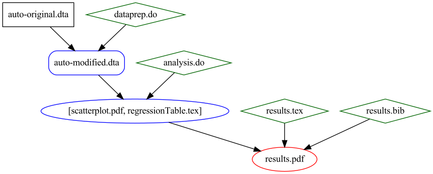
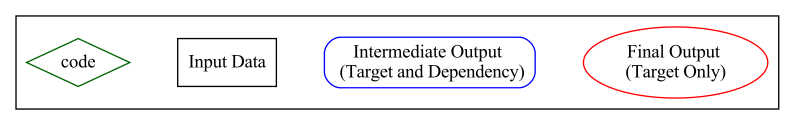

C. Compiling a PDF from the Introductory Example¶
Figure C1: Workflow for Compiling PDF from Introductory Example
 
Listing C2: SConstruct for Compiling PDF from Introductory Example
# SConstructCompilePDF
# **** Setup from pystatacons package *****
import pystatacons env = pystatacons.init_env()
Help("""To compile analysis targets only:
'statacons, file(SConstructCompilePDF)'
'scons --file=SConstructCompilePDF'
To clean only analysis targets (not compiled PDF)
'statacons, file(SConstructCompilePDF) clean'
'scons --file=SConstructCompilePDF -c'
To compile PDF:
'statacons compilePDF, file(SConstructCompilePDF)'
'scons --file=SConstructCompilePDF compilePDF'
To clean all targets plus all latex helper files (aux, bbl, etc)
'statacons compilePDF, file(SConstructCompilePDF) clean'
'scons --file=SConstructCompilePDF compilePDF -c'
To clean only latex helper files (aux, bbl, etc)
'statacons cleanPDFhelp, file(SConstructCompilePDF) clean'
'scons --file=SConstructCompilePDF cleanPDFhelp -c' """, append=True)
# **** Substance begins *****
# dataprep
dataprep_Targets =['outputs/auto-modified.dta']
Alias('dataprep',dataprep_Targets)
cmd_dataprep = env.StataBuild(
target = dataprep_Targets,
source = 'code/dataprep.do',
depends = ['inputs/auto-original.dta'])
# analysis
analysis_Targets = ['outputs/scatterplot.pdf',
'outputs/regressionTable.tex']
Alias('analysis',analysis_Targets)
cmd_analysis = env.StataBuild(
target = analysis_Targets,
source = 'code/analysis.do',
depends = dataprep_Targets)
Default('analysis')
# compile PDF - SCons knows how to scan tex files for dependencies
env.Tool("pdftex")
env.AppendUnique(PDFLATEXFLAGS='-quiet')
pdf_output = env.PDF(target='outputs/results.pdf', source='code/results.tex')
Alias('compilePDF','outputs/results.pdf')
# extra files generated by pdflatex to clean
pdfToClean = ["outputs/results"+e for e in ['.synctex.gz','.fls','.log','.aux',' > .bbl','.out','.dvi','.blg']]
Clean('cleanPDFhelp',pdfToClean)
Listing C3: SCons output from Compiling PDF from Introductory Example
. statacons compilePDF, file(SConstructCompilePDF) debug(explain)
tree(status,prune) scons: Reading SConscript files ...
Using 'LabelsFormatsOnly' custom_datasignature.
Calculates timestamp-independent checksum of dataset,
including variable formats, variable labels and value labels.
Edit use_custom_datasignature in config_project.ini to change.
(other options are Strict, DataOnly, False)
scons: done reading SConscript files.
scons: Building targets...
scons: building 'outputs results.pdf' because it doesn't exist
cd /D outputs && pdflatex -interaction=nonstopmode -recorder -quiet results.tex
cd /D outputs && bibtex results
cd /D outputs && pdflatex -interaction=nonstopmode -recorder -quiet results.tex
cd /D outputs && pdflatex -interaction=nonstopmode -recorder -quiet results.tex
E = exists
R = exists in repository only
b = implicit builder
B = explicit build
S = side effect
P = precious
A = always build
C = current
N = no clean
H = no cache
[E b ]+-compilePDF
[E B C ] +-outputs\results.pdf
[E C ] +-code\results.tex
[E C ] +-code\results.bib
[E B P C ] +-outputs\regressionTable.tex
[E C ] | +-code\analysis.do
[E B P C ] | +-outputs\auto-modified.dta
[E C ] | +-code\dataprep.do
[E C ] | +-inputs\auto-original.dta
[E B P C ] +-outputs\scatterplot.pdf
[E C ] +-code\analysis.do
[E B P C ] +-\[outputs\auto-modified.dta\]
scons: done building targets.
Figure C4: Compiled PDF from Introductory Example